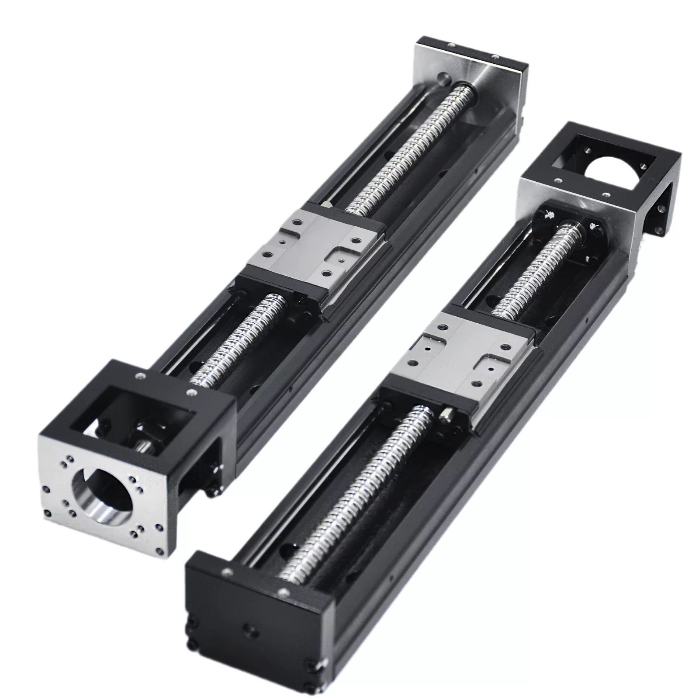

FACTORY DIRECT / DONGGUAN, CHINA
Linear modules, built in our own Dongguan workshop.
KINX builds linear modules in our own Dongguan workshop — ball screw, belt-driven, slide table and embedded modules. Positioning accuracy ±0.01 mm, repeat accuracy 0.003–0.01 mm. Tell us the stroke and load — we send a drawing and a price.
No cart, no checkout — every order is quoted by a person.

01 / SELECT THE MOTION
Start with the motion requirement
Ball screw linear modules
Ball screw and nut
Positioning accuracy comes first
- Positioning accuracy ±0.01 mm, repeat accuracy 0.003–0.01 mm
- Motor mounts on the left, right, top or bottom
- Horizontal or vertical mounting
Belt driven linear modules and slides
Toothed belt
Long, fast moves
- Fully enclosed and semi-enclosed versions
- Long-travel transfer at higher speed than a screw drive
- Horizontal or vertical mounting
Slide table & linear stage modules
Embedded ball screw
A low profile for a tight machine envelope
- The screw sits inside the body, so the module stays low
- Proven 500 mm stroke at ±0.01 mm accuracy
- Repeat accuracy 0.003–0.01 mm
02 / OPEN THE RANGE
What we build
| Family | Models and sizes | Stroke |
|---|---|---|
| KK seriesSingle-axis ball screw module | KK5002 · KK6005 · KK6010 · KK6020 · KK8610 · KK8620 · KK10020 (expected early 2026) | 20–810 mm (KK60) 50–1310 mm (KK86) 70–220 mm standard (KK50) |
| Multi-axis systemsXY and three-axis cantilever assemblies | Assembled from single axes Dual-station body 68 mm wide | Built to your layout |
Already running in
- Vision labeling machines
- Medical equipment
Both of those are jobs we have shipped, not target markets.
Where these claims come from
The turnaround figures above and the vision-labeling job are both things we posted ourselves — here are the clips.


Quality system


Certificate details are shown on request during quoting — we do not publish certificate numbers on this page.
Series we build
Frequently asked questions
What positioning accuracy do KINX linear modules reach?
Our published positioning accuracy is ±0.01 mm and repeat accuracy is 0.003–0.01 mm. Anything tighter we confirm in writing against your drawing before you order.
What stroke lengths can KINX build?
We have built and published strokes up to 500 mm. Our KK60 and KK86 modules are built to order across 20–810 mm and 50–1310 mm — any length in range, confirmed on a drawing.
Ball screw or belt drive — which do I need?
Long, fast moves favour a belt drive; where positioning accuracy comes first, a ball screw is the better choice — a screw pushed too long and too fast will whip. Tell us the stroke, the speed and the accuracy you need and we recommend the drive.
Can the modules be mounted horizontally and vertically?
Yes. Horizontal and vertical mounting are both supported. Tell us the orientation and duty cycle so we size the drive correctly.
How fast can KINX quote and deliver?
We return a design solution in about 6 hours and can deliver in as little as 24 hours on stock-based builds.
Is there a price list or online checkout?
No. KINX is a factory-direct inquiry site with no cart and no public prices. Send stroke, load and orientation by WhatsApp or email and we reply with a drawing and a price.
Where are KINX linear modules made?
They are built in our own workshop in Dongguan, Guangdong, China, under an ISO 9001:2015 quality system.
Will KINX KK modules fit THK SKR, PMI KM or MISUMI sizes?
Our KK sizes are built to match the mounting dimensions and combined height of the equivalent THK SKR / KR, PMI KM and MISUMI C-KS sizes. We state matching dimensions, not verified interchange — send the brand and part number and we confirm the dimension table on your drawing before you commit. We do not supply original-brand packaging or brand-authorisation papers.
Do you offer OEM / ODM builds and custom stroke?
Yes. We build custom stroke and mounting structures to your drawing, and OEM / ODM is available. Send the stroke, load, orientation and any mounting constraint and we come back with a drawing and a price.
ENGINEERING HANDOFF
Get this quoted
Send stroke, load, speed, accuracy, environment and duty cycle. We reply with a drawing and a price. Design solutions in 6 hours; delivery as little as 24 hours on stock-based builds.